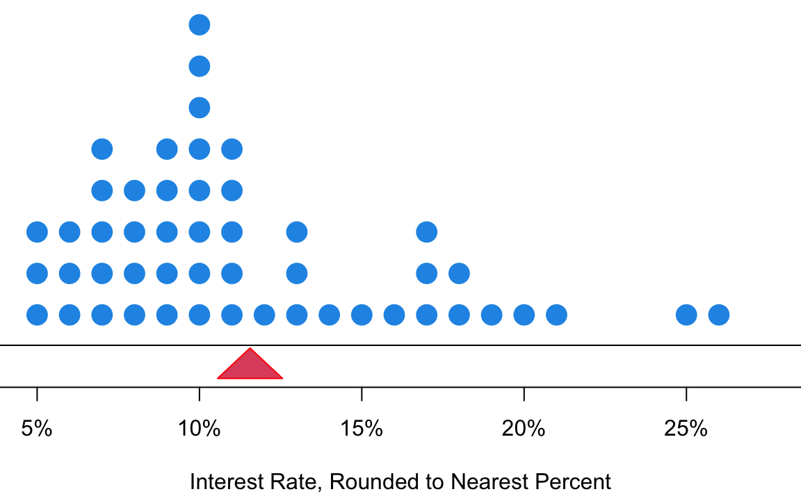
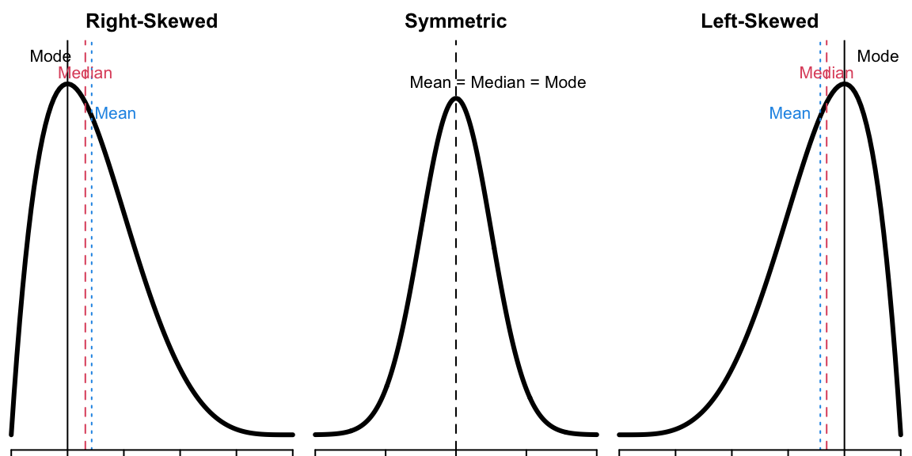
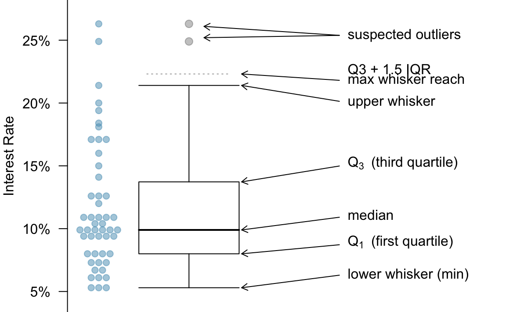

5 Data Sample Statistics
Numerical Summaries of Data

-
Measure of Center
- We typically use the middle point.
- What does “middle” mean?
-
Measure of Variation
- What values tell us how much variation a variable has?
5.1 Measures of Center
Mean
- The (arithmetic) mean or average is calculated by adding up all of the values and then dividing by the total number of them.
- The population mean is denoted as \(\mu\).
- Let \(x_1, x_2, \dots, x_n\) denote the measurements observed in a sample of size \(n\).
- The sample mean is defined as
- For the interest rate example,
Calculate Mean in R
mean(int_rate)[1] 11.558Balancing Point
- Think of the mean as the balancing point of the distribution.


Median
- The median is the middle value when data values are sorted.
- Half of the values are less than or equal to the median, and the other half are greater than the median.
- To find the median, we first sort the values.
- If \(n\) is odd, the median is located in the exact middle of the ordered values.
- Data: (0, 2, 10, 14, 8)
- Sorted Data: (0, 2, 8, 10, 14)
- The median is \(8\) .
- If \(n\) is even, the median is the average of the two middle numbers.
- Data: (0, 2, 10, 14, 8, 12)
- Sorted Data: (0, 2, 8, 10, 12, 14)
- The median is \(\frac{8 + 10}{2} = 9\) .
Calculate Median in R
- There are two ways to calculate the median in R.
median(int_rate) ## Compute the median using command median()[1] 9.9## Compute the median using definition
(sort_rate <- sort(int_rate)) ## sort data [1] 5.3 5.3 5.3 6.1 6.1 6.1 6.7 6.7 7.3 7.3 7.3 8.0 8.0 8.0 8.0
[16] 9.4 9.4 9.4 9.4 9.4 9.9 9.9 9.9 9.9 9.9 9.9 10.4 10.4 10.9 10.9
[31] 10.9 10.9 10.9 12.0 12.6 12.6 12.6 14.1 15.0 16.0 17.1 17.1 17.1 18.1 18.4
[46] 19.4 20.0 21.4 24.9 26.3length(int_rate) ## Check sample size is odd or even[1] 50(sort_rate[25] + sort_rate[26]) / 2 ## Verify the answer[1] 9.9
Warning
- Be sure to sort the data first if computing the median using its definition.
(int_rate[25] + int_rate[26]) / 2 ## Using un-sorted data leads to a wrong answer!![1] 8.1Mode
- The mode is the value that occurs most frequently.
- For continuous numerical data, it is common for there not to be any observations that share the same value.
- A more practical definition is that a mode is represented by a prominent peak in the distribution.
Calculate Mode in R
## Create a frequency table
(table_data <- table(int_rate))int_rate
5.3 6.1 6.7 7.3 8 9.4 9.9 10.4 10.9 12 12.6 14.1 15 16 17.1 18.1
3 3 2 3 4 5 6 2 5 1 3 1 1 1 3 1
18.4 19.4 20 21.4 24.9 26.3
1 1 1 1 1 1 ## Sort the table to find the mode that occurs most frequently
## the number that happens most frequently will be the first one
sort(table_data, decreasing = TRUE)int_rate
9.9 9.4 10.9 8 5.3 6.1 7.3 12.6 17.1 6.7 10.4 12 14.1 15 16 18.1
6 5 5 4 3 3 3 3 3 2 2 1 1 1 1 1
18.4 19.4 20 21.4 24.9 26.3
1 1 1 1 1 1 5.2 Comparison of Mean, Median and Mode
- The mode is applicable for both categorical and numerical data, while the median and mean work for numerical data only.
- It is also possible to have more than one mode, but there is only one median and one mean.
- The mean is sensitive to extreme values (outliers).
- The median and mode are more robust than the mean.
- Being more robust means these measures of center are more resistant to the addition of extreme values to the data.
- An example in R is shown below:
data_extreme [1] 90.0 9.9 26.3 9.9 9.4 9.9 17.1 6.1 8.0 12.6 17.1 5.3 7.3 5.3 8.0
[16] 24.9 18.1 10.4 8.0 19.4 14.1 20.0 9.4 9.9 10.9 5.3 6.7 15.0 12.0 12.6
[31] 10.9 9.4 9.9 7.3 18.4 17.1 8.0 6.1 6.7 7.3 12.6 16.0 10.9 9.9 9.4
[46] 10.4 21.4 10.9 9.4 6.1mean(data_extreme) ## Large mean! Original mean is 11.56[1] 13.14median(data_extreme) ## Median does not change![1] 9.9[1] "9.9"- Below is a figure that shows the differences in where the mean, median, and mode lie for skewed distributions vs. symmetric distributions.

5.3 Measures of Variation
- Measures of variation, just like measures of center, affect the shape of the distribution (Figure 5.3).

p-th percentile
- The p-th percentile (quantile) is a data value such that
- at most \(p\%\) of the values are below it
- at most \((1-p)\%\) of the values are above it

Interquartile Range (IQR)
- First Quartile (Q1): the 25-th percentile
- Second Quartile (Q2): the 50-th percentile (Median)
- Third Quartile (Q3): the 75-th percentile
- Interquartile Range (IQR): Q3 - Q1
Variance and Standard Deviation
- The distance of an observation from its mean, \(x_i - \overline{x}\), is its deviation.
- Sample Variance is defined as \[ s^2 = \frac{\sum_{i=1}^n(x_i - \overline{x})^2}{n-1} \]
- Sample Standard Deviation (SD) is defined as the square root of the variance. \[ s = \sqrt{\frac{\sum_{i=1}^n(x_i - \overline{x})^2}{n-1}} \]
- The corresponding population variance and SD are denoted as \(\sigma^2\) and \(\sigma\) respectively.
- The variance is the average of squared deviation from the sample mean \(\overline{x}\) or the mean squared deviation from the mean.
- The standard deviation is the root mean squared deviation from the mean.
- It measures, on average, how far the data spread out around the average.
Compute Variance and SD in R
5.4 Visualizing Data Variation
Boxplot
- When plotting the whiskers for a boxplot,
- the minimum is the minimal value that is not a potential outlier.
- the maximum is the maximal value that is not a potential outlier.

Interest Rate Boxplot
- Below is the boxplot for the interest rate data (Figure 5.6).

Boxplot in R
boxplot(int_rate,ylab ="Interest Rate (%)")
5.5 Exercises
- In the following, we will be using the data set
mtcarsto do some data summary and graphics. First load the data set into your R session by the commanddata(mtcars). The data set is like
head(mtcars) mpg cyl disp hp drat wt qsec vs am gear carb
Mazda RX4 21.0 6 160 110 3.90 2.620 16.46 0 1 4 4
Mazda RX4 Wag 21.0 6 160 110 3.90 2.875 17.02 0 1 4 4
Datsun 710 22.8 4 108 93 3.85 2.320 18.61 1 1 4 1
Hornet 4 Drive 21.4 6 258 110 3.08 3.215 19.44 1 0 3 1
Hornet Sportabout 18.7 8 360 175 3.15 3.440 17.02 0 0 3 2
Valiant 18.1 6 225 105 2.76 3.460 20.22 1 0 3 1Please see ?mtcars for the description of the data set.
Use the function
boxplot()to generate a boxplot of 1/4 mile time (qsec). Are there any outliers?Compute the mean, median and standard deviation of displacement (
disp).
-
Mean and standard deviation (SD): For each part, compare data (1) and (2) based on their mean and SDs. You don’t need to calculate these statistics, but compare (1) and (2) by stating which one has a larger mean/SD or they have the same mean/SD. Explain your reasoning.
- -30, 0, 0, 0, 15, 25, 25
- -50, 0, 0, 0, 15, 20, 25
- 0, 1, 3, 5, 7
- 21, 23, 25, 27, 29
- 100, 200, 300, 400, 500
- 0, 50, 350, 500, 600
- Skewness: Facebook data indicate that \(50\%\) of Facebook users have 130 or more friends, and that the average friend count of users is 115. What do these findings suggest about the shape (right-skewed, left-skewed, symmetric) of the distribution of number of friends of Facebook users? Please explain.